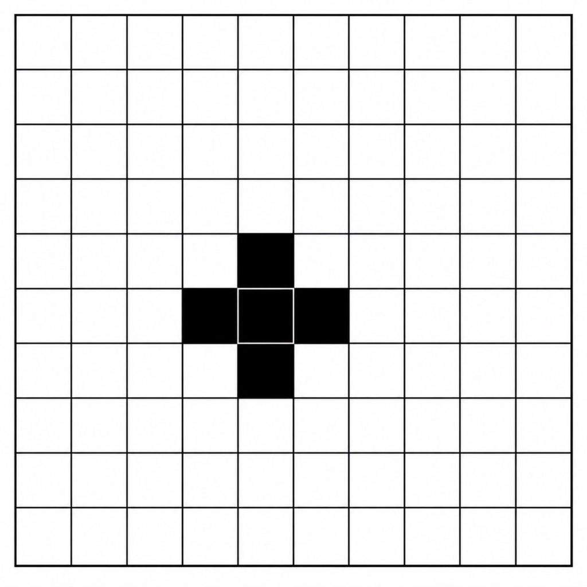

RT:为什么顺性别异性恋需要关注LGBTQ问题？
骄傲月快过去了，但是简中区整体上对LGBTQ问题缺乏讨论。我觉得与其指望别人，不如自己动手，开一个系列科普贴，也算是为社区做贡献了 …
这是一篇转载推文。原文在：https://x.com/i/status/2070360702951239899
由X 上的@suanrongyouyuxu 创建
骄傲月快过去了，但是简中区整体上对LGBTQ问题缺乏讨论。我觉得与其指望别人，不如自己动手，开一个系列科普贴，也算是为社区做贡献了。
今天是第一期，我打算从一些最基础的问题入手：为什么顺性别异性恋需要关注LGBTQ问题？为什么LGBTQ问题如此重要？为何明明他们在人口中的占比那么小，却执意要占据那么多的位置，乃至一定程度上成了现今最具争议的议题之一？大家当透明人不好吗？这一切是值得的吗？
考虑到目前简中舆论圈LGBTQ议题的边缘程度，如果你对这些问题有兴趣，或者觉得我写的东西有点道理的话，请帮我转发或分享给你的朋友，这样我会更有动力写后面的内容。
为何顺直人要关注LGBTQ问题？
抛开高尚的道德叙事，仅从自身利益出发，LGBTQ的权益对顺直人也是有意义的。我把这个问题分为几层。
第一层是矿井金丝雀理论。
矿井金丝雀
这是社会学和政治学中非常著名的理论。过去矿工下井，会带一只金丝雀，因为这种鸟对有毒气体极度敏感。如果金丝雀死了，说明危险即将来临，矿工必须马上撤离。
而对于顺直人来说，少数群体的处境，就是社会法治和权利边界的金丝雀。
如果你觉得这种说法持有怀疑态度，那么你可以了解一下当年纳粹的清洗轨迹。在纳粹清洗犹太人之前，他们首先对残疾人和性少数（当时主要是男同性恋）展开了试验田。
纳粹对残疾人的清洗，被称为 “T4行动”（Aktion T4）。这是希特勒亲自授权的秘密安乐死计划，针对的是精神病患者、肢体残疾者、失明失聪者以及患有慢性疾病的儿童。在纳粹的宣传中，这些人被称为“没有生存价值的生命”（Life unworthy of life）。他们打着科学与经济的幌子，在宣传海报上写着：这个患有遗传疾病的人，一生要花费社会60,000马克。同胞们，这也是你们的钱！通过将人工具化和商品化，纳粹成功地向健全人植入了冷漠。
正是为了更高效地执行T4行动，纳粹医生和技术人员在精神病院里首次研发并使用了毒气室（一氧化碳）和伪装成淋浴间的屠杀设施。
这些设施后来被用于清洗犹太人，这个大家都知道了。但很多人不知道的是，这些东西最早是被用来处理残疾人的。在魏玛共和国时期（1920年代），柏林曾是全球性少数群体文化的中心，拥有前卫的科学研究机构（如马格努斯·赫希菲尔德的性学研究所）。但纳粹上台后，第一件事就是彻底摧毁这一区域。
在集中营里，男同性恋者被强迫佩戴倒转的粉红三角形（Pink Triangle） ，Lesbian和跨性别者有时被归为反社会分子，佩戴黑色三角形。纳粹大幅收紧了德国刑法第175条（将男性同性性行为定为犯罪的条款）。在纳粹治下，哪怕仅仅是“两个男人之间交错的眼神”或“带有暗示的轻触”，都有可能当成作为定罪判刑、送入集中营的证据。据统计，约有10万名男性因此被捕，数万人被折磨致死。
为什么？因为纳粹认为同性恋者无法为帝国生育人口，是人口繁衍的寄生虫，会污染雅利安人的健康血统。这与他们压迫妇女、强制顺直女性沦为生育工具的逻辑是一体两面的。
就像那首著名的诗。
起初他们追杀共产主义者，我没有说话——因为我不是共产主义者；接着他们追杀犹太人，我没有说话——因为我不是犹太人……最后他们奔我而来，却再也没有人站起来为我说话了。
奥斯维辛不是一天建成的。它是在人们的冷漠和默许中慢慢一步步建立的。
当一个社会开始允许对某个特定少数群体进行法外剥夺、污名化和肉体消灭时，通往深渊的大门就已经打开了。每一次对少数人权利的默许侵蚀，都是在给未来多数人的灾难递刀。这就是为什么一个不直接利益相关的顺直人，也应该对此警惕的原因。这是历史的警示。举极端历史的例子是为了提醒我们权利的边界在哪里。
第二层，异性恋规范对人的规训
很多顺直人在生活中面临的压力，与LGBTQ想要解构的东西其实是同一个源头：异性恋规范（Heteronormativity）。
这个规范不仅规训性少数，它也在规训多数人。顺直男性需要具备经济实力（买房买车），不能流泪，不能展示软弱。顺直女性需要承担繁衍后代的任务，需要温柔体贴，需要在家庭和工作中做出牺牲。
如果一个社会中两个男人或者两个女人可以相爱，或者认同非二元的性别存在，那就相当于破坏了男性应该阳刚和女性应该温柔的叙事。男人未必要承担那些重担，而女性也不必成为贤妻良母。
这其实是一个经典而古老的愿望：在不损害他人的情况下，人应该能自由的成为他想成为的人，而不是那个仅仅被社会所期待的人。
如果连社会上最弱势的人都能够自由的成为自己理想中的人，那普通人身上的枷锁也就不复存在了。
（顺便一说，这也是为什么LGBTQ和女权绝不应该走上用暴力压制异己者的道路，因为这正是顺直人和男性原本用来压迫性少数和女性的工具。反压迫不能够成为新的压迫，不然解放毫无意义。简中LGBTQ的力量太小了，所以我说的是什么大家应该猜得到。）
第三层，为了你不可预测的后代和亲人
这是一个非常现实的考量。目前学界的共识是，性别取向和性别认同主要还是受先天因素影响。这意味着如果你和你的伴侣是顺直人，你其实无法保证自己的后代和与你关系相近的亲属也是顺直人。
而且需要知道的是，LGBTQ在人群中的占比并不低。LGBTQ的人口比例没有一个全球统一的精确数字。目前一些比较可靠的调查，比如美国的一项民意调查显示，大约有9%的成年人自我认同为LGBTQ+ ，年轻人中的比例甚至更高。欧洲各国的调查大致也在5%-10%的比例之间。
即便我们取比较保守的5%，这也是一个不容忽视的数字。很多人可能对5%这个数字缺乏直接的感受，所以我让AI画了一张图片，大家可以从空间上来更直观的感受5%是多少。

如上图所示，这是一个10×10的方格，一个格子代表1%，5个格子即代表5%。你真的觉得图中涂黑的部分很少吗？把这么多的人口从总人口中抹去，真的是无关紧要的吗？
我也可以拿一些数字来类比。如果我们认为中国有14亿人口，那么5%就是7000万人。这个数字已经超过了北上广的总人口（北京2200万，上海2500万，广州1900万）。
超过了世界上大部分国家的人口，比如法国6800万人，英国6900万人，韩国5900万人。如果这7000万人独立建国，那么人口数将会排世界第22，仅次于泰国的7200万人和坦桑尼亚的7100万人。
如果一个体育场能容纳7万人，那么容纳这些人就需要1000个这样的体育场。
这绝对是一个无法忽视的数字。而且要注意，这还是较为保守的数字。然后很多人会说，我不认识几个LGBTQ的人啊？那是因为如果社会（或者你的）接纳度不够，这些人绝大部分都是隐形的。如果社会不认可性少数，他们为什么要把自己的性别取向和性别认同告诉大家？如果社会极力打压这些人，他们就会装作是普通的顺直人。
他们只是隐身，不代表不存在。实际上这些人可能是任何人。可能是你的朋友、同学、同事，也可能是你的父母、子女、兄弟姊妹，甚至有可能是你的伴侣。据保守估计，中国有大约1000万-1600万的同妻，也就是男同性恋者在婚内的异性妻子。这一庞大群体背后，通常伴随着无性婚姻、家庭暴力以及严重的心理健康压力。
甚至甚至，这个人可能就是你自己。并不是所有人都能很小就发现自己的性取向和性认同的。很多人在30岁之后，甚至更大的年纪才意识到自己的身份。而在此之前，他们只能隐约地觉得自己跟别人不同。很多人迫于严重的社会压力，反而会恐同和恐跨，即中文里的“恐同即深柜”。这是有依据的，人会因为害怕而故意与之切割或保持距离，是非常常见的状况。这个下次有机会的话再详细说说。
这也是为什么我们应该站出来直面这个问题，破除这些恐惧和污名化的原因。
第一期差不多就到这里了，基本回答了开头的问题。我想说的是，LGBTQ权益绝对不是牺牲多数人的利益，而是跟每个人利益相关的。如果你也认同这一点的话，希望能分享给其他人。另外我在重申一下，我写的内容原则上随意转载，只要注明出处和名字就行了。
这个系列还是希望能解答一些大家的常见疑问和误解。如果你有一些非常代表性的问题，可以在下面留言，我可能会在后续中尝试回答。